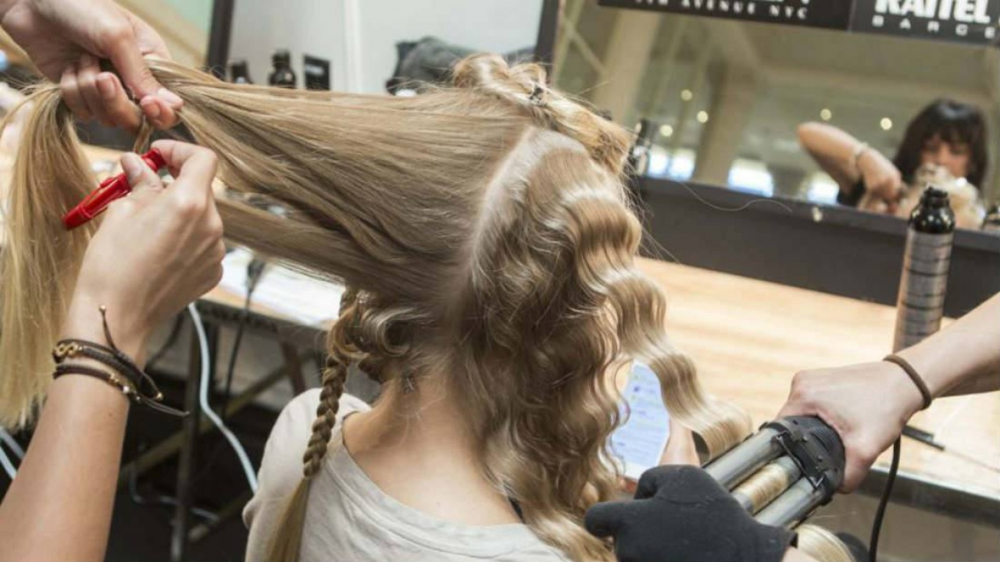
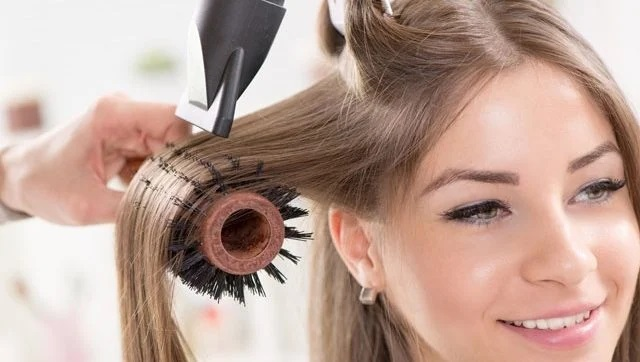
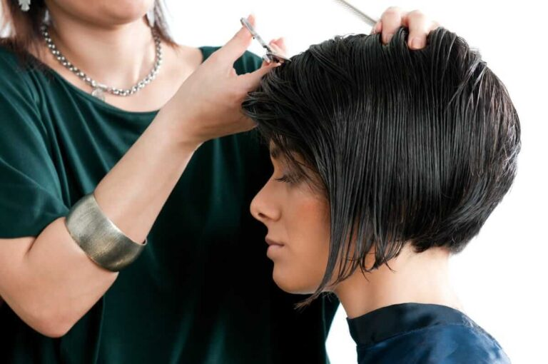

| Peluquería Básica | |
| 1. ONDULACIÓN PERMANENTE: |  |
| Técnicas de ondulación capilar directa e indirecta. | |
| 2. DISEÑO DE MECHAS: |  |
| Balayage, baby light y mechas de fantasía. | |
| 3. CORTE DE CABELLO PARA DAMAS: |  |
| Corte sólido, escalonado, bod y degrafilados. | |
| 4. CORTE DE CABELLO PARA CABALLEROS: | |
| Corte con tijera, máquina, escolar, militar, barbería básica, técnicas de Fade y Técnicas de Snik Fade. | |
| 5. TINTURACIÓN CAPILAR: | |
| Mechas de fantasía, técnicas de balayage y técnicas de baby light. | |